Scientific Classification
| Kingdom | Animalia | Animal | Animals |
|---|---|---|---|
| Phylum | Chordata | Chorda | Corded |
| Class | Mammalia | Mammālis | Of the Breast |
| Subclass | Theria | θηρῐ́ον | Wild Beasts |
| Infraclass | Placentalia | Placentālis | Placental |
| Magnorder | Boreoeutheria | Βορέᾱς + ἐΰς + θηρῐ́ον | True Northern Beasts |
| Superorder | Laurasiatheria | Laurasia + θηρῐ́ον | Wild Beasts of Laurasia |
| Grandorder | Ferungulata | Ferus + Ungulātus | Wild Beasts and Ungulates |
| Mirorder | Ferae | Ferus | Savage Beasts |
| Order | Carnivora | Carō + Vorāre | Flesh Eating |
| Suborder | Feliformia | Fēlis + Fōrmis | Cat Forms |
| Infraorder | Aeluroidea | αἴλουρος | Cats |
| Family | Felidae | Fēlis | Cat |
Taxonomic note: This classification uses the conventional Earth classification of Felidae as a starting point. It does not establish that every feline-like animal on Kaimere belongs to this family.
01 · INTRODUCTION
Overview

Felids are predatory mammals associated with a broad range of terrestrial environments. Living cats on Earth exhibit considerable variation in body size, limb proportions, hunting strategies, and habitat use. These differences reflect adaptations to distinct prey communities and ecological conditions.
The felids of Kaimere constitute a diverse assemblage of predatory mammals occupying habitats ranging from tropical rainforests and extensive wetlands to temperate woodlands, open steppes, mountain forests, and offshore islands. Although many resemble familiar cats from Earth, the Kaimeran felids are distinguished by their unusual evolutionary history, the persistence of several lineages of saber-toothed cats, and its coexistence with a diverse megafauna that includes large dinosaurs, crocodilians, and other formidable mammalian predators.
Felids occupy several distinct ecological roles within Kaimere's terrestrial ecosystems. Some are solitary ambush predators adapted to dense vegetation, while others specialize in pursuing prey through open woodland or across grasslands. Certain species are capable of killing animals several times their own mass, and a number regularly prey upon large reptiles and dinosaurs. Others depend primarily on smaller mammals, birds, and other comparatively modest prey. These differences in body size, hunting strategy, and habitat preference permit multiple species to coexist within the same general region.
The evolutionary history of Kaimeran felids has been strongly influenced by repeated introductions of Earth fauna through the Portal, known in Kaimeran tradition as the Elder God Rahar. These introductions, termed harvests, have repeatedly altered the composition of the planet's carnivore guilds. The most consequential event for the modern large-cat fauna occurred approximately 1.5 million years ago, when climatic disruption and the subsequent introduction of numerous Southeast Asian and other Eurasian mammals precipitated a major turnover among the indigenous predators.
Modern Kaimere consequently supports a mixture of lineages with different origins. These include representatives of Panthera and Puma, the cursorial saber-toothed genus Homotherium, and the highly specialized and endemic metailurine genus Cinnabarphoneus, commonly known as the red panther. The machairodont Megantereon also survives in the isolated highlands of Arvel as the haraod, a distinctive mountain predator. Other historical lineages, including the enormous bearcat Arctomachairodus, disappeared during the climatic upheavals surrounding the end of the Anchored Period.
Although the family Felidae provides a useful taxonomic framework for organizing these animals, the precise relationships among several Kaimeran lineages remain incompletely resolved. Fragmentary fossils, repeated introductions, possible hybridization, and the independent evolution of similar anatomical adaptations complicate the reconstruction of their ancestry.
02 · DEEP TIME
Evolutionary History
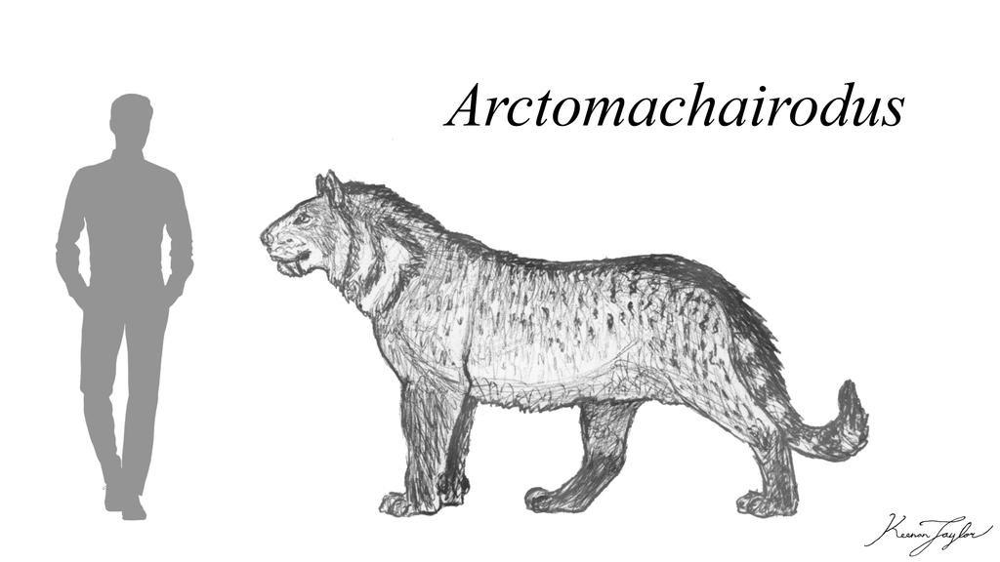
Approximately 6 million years ago, the Known World entered an extended period of ecological prosperity. Warm, humid conditions supported extensive forests, productive wetlands, and abundant herbivorous megafauna. Titanosaurs were widespread, while caimans, sloths, and phorusrhacids introduced through earlier harvests flourished alongside native dinosaurs. During this interval, machairodonts dominated much of the large-mammal predator guild. Earlier nimravids had already declined substantially in the Known World, while multiple saber-toothed lineages diversified into different ecological roles. Two important components of this fauna were the robust cats represented by Nimravides and Amphimachairodus. Their descendants exploited the abundant large prey and extensive woodland habitats characteristic of the period. The metailurines were also highly diverse, ranging from smaller predators to powerful animals capable of hunting substantial prey. The most imposing of these large cats included Arctomachairodus, a massive predator associated with the dense highland forests of Arvel. The largest known specimens have been estimated at approximately 1,300 pounds, or 590 kilograms, making it one of the heaviest cats known from Kaimere. Its robust construction and powerful dentition suited it to rapid dispatch of large prey. This prosperous ecological regime persisted for several million years. Because the Portal required no further major introductions to maintain its territory, the Known World experienced an unusually long interval without a harvest. This period of relative stability became known as the Anchored Period.
The Anchored Period ended following a rapid climatic shift approximately 1.5 million years ago. The event is generally associated with a substantial alteration in Kaimere's axial tilt, although the exact mechanism and magnitude remain uncertain. The resulting changes affected atmospheric circulation, ocean currents, seasonality, and the distribution of precipitation. The tropical regions became hotter and more arid, while colder latitudes experienced harsher conditions and increased polar ice. Falling sea levels altered coastal environments and exposed land connections between previously separated regions. These changes destabilized ecosystems throughout the Known World. Wetlands contracted, vegetation communities shifted, and many large herbivores declined or disappeared. Predators dependent on these animals were affected by both the loss of prey and the transformation of their habitats. The consequences were especially severe for highly specialized carnivores. The disappearance of many large mammals and dinosaurs reduced the availability of substantial prey, while changes in forest structure altered the balance between ambush predators and animals adapted to pursuit. Arctomachairodus and numerous other indigenous large cats disappeared during this interval. Although the exact causes of their extinction are uncertain, habitat disruption and the collapse of their prey base likely contributed substantially.
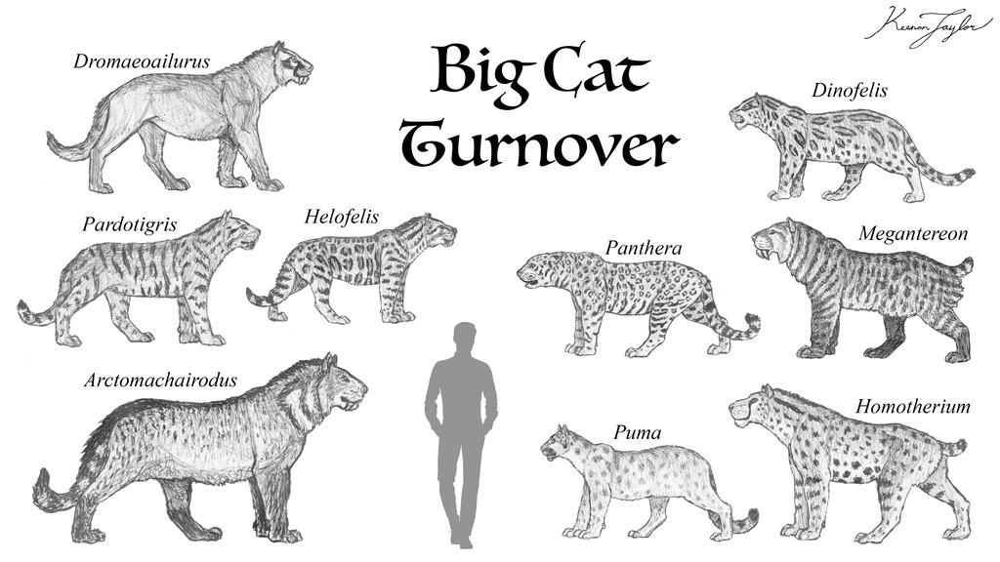
The climatic crisis prompted the Portal to introduce a new assemblage of plants and animals from Southeast Asia and surrounding regions. The introduction occurred while native ecosystems remained severely disrupted. Among the introduced mammals were representatives of Dinofelis, Megantereon, Homotherium, Puma, and Panthera. These genera rapidly established populations across suitable habitats, taking advantage of the reduced abundance of their predecessors and the ecological changes produced by the new vegetation. The success of these introductions was not necessarily a consequence of inherent superiority. Newly introduced animals sometimes benefited from arriving in substantial numbers while native populations were already depleted. Their established reproductive populations, dietary flexibility, and pre-existing adaptations to changing environments gave them opportunities unavailable to many indigenous competitors. The initial expansion of Puma was particularly extensive. Low sea levels exposed land bridges and narrowed marine barriers, while the cats' apparent proficiency at swimming allowed them to reach numerous islands and spread between the principal landmasses. Homotherium prospered in open forests and grasslands, where its cursorial anatomy provided an advantage. Megantereon remained successful in wooded habitats, particularly where climbing allowed it to remove kills from the reach of larger scavengers and competing predators. Panthera established populations primarily in closed forests, although its descendants would eventually diversify into a wider range of habitats. The metailurine lineage that ultimately produced the red panther also expanded during this period. Its subsequent success is among the most significant examples of a saber-toothed cat lineage surviving and diversifying under the ecological conditions of modern Kaimere.
The transformation of the Kaimeran felid fauna did not end with the harvest of 1.5 million years ago. Further introductions continued to reshape the predator guild. A later harvest associated with northern Eurasian fauna, approximately 700,000 — 600,000 years ago, contributed to the development of the highland bobcat, in southern Arvel. This species occupies open steppes and other habitats in which social pursuit hunting remains effective. The introduction of additional cats, particularly leopard-like Panthera, placed further pressure on Puma and several other established lineages. Later arrivals also affected the distribution of cheetah-like cats and other medium-sized felids. Competition with hyenas, terror birds, and native dinosaurian predators further influenced the modern distribution of cats. The resulting fauna is therefore not a simple record of successive invasions, but the outcome of repeated introductions, climatic changes, local extinctions, and ecological partitioning.
03 · SPECIES ACCOUNTS
Known Diversity
The following accounts document representative felids recorded in the encyclopedia. Select a species to consult its individual natural history and descriptive account. This -only encompases extant species however.
Sulan
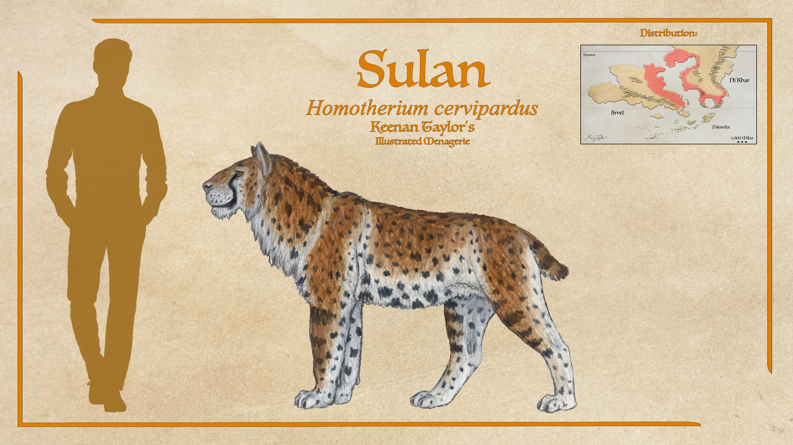
Homotherium cervipardus
Though hyenas have largely outcompeted other cursorial mammal predators in Ni'Khar, Arvel's resident cursorial mammal is still quite successful in the titan gardens: the sulan, or hyena bobcat. This species of Homotherium is found on both continents, much like the forest hyena. However, they are much more abundant and social in Arvel while their Ni'Khari counterpart is solitary and now considered endangered.
Read species article →Highland Bobcat
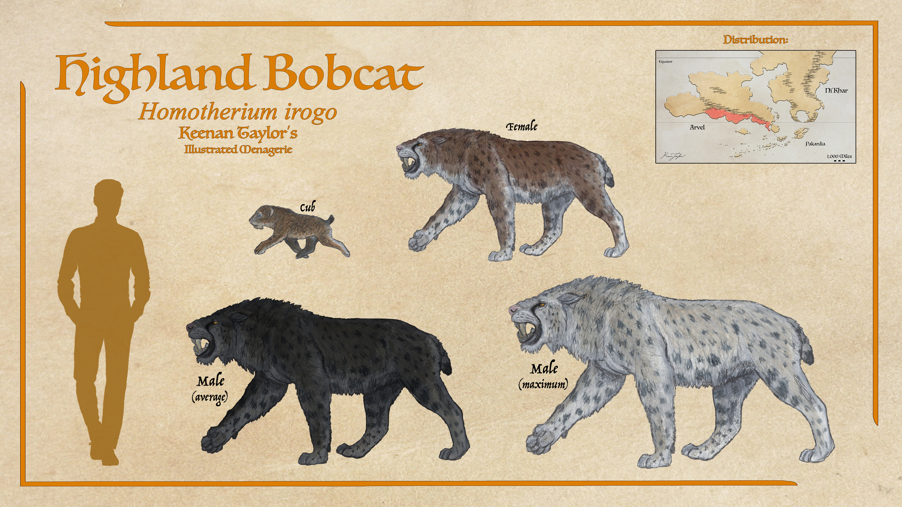
Homotherium irogo
The highland bobcat, or irogo, is a species of Homotherium found in southern Arvel. They are social predators, often living in packs of a few related females, their cubs, and a mate or two. Though hyenas are far more socially complex, irogo actually do more hunting in a group. Unlike the sulan, which are almost always a chestnut brown, the irogo actually come in a surprising array of colors, with white, blond, brown, red, and black found throughout their range.
Read species article →Haraod
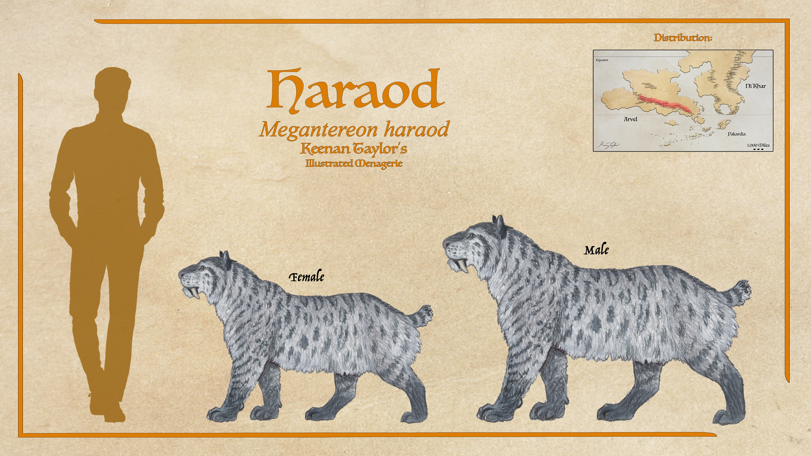
Megantereon haraod
Also known as the 'Bearcat', the Haraod is a large sabre-tooth cat found throughout the highlands of Arvel. Part of the bear comparison in this animal stems from their robust build and short tail. Another is in their frequency of standing on their hind legs. The feet of this cat are very broad. Not great for travel, which is why most felids have more narrow feet, but the wide paws of this species is not only ideal for traversing the uneven terrain of their mountain homes.
Read species article →Common Red Panther
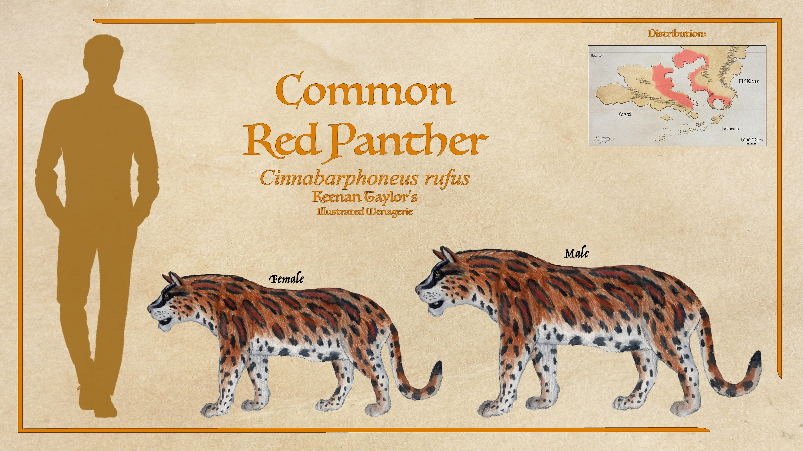
Cinnabarphoneus rufus rufus
There are three species of red panther. The common red panther Cinnabarphoneus rufus as by far the widest range, being found throughout Arvel and Ni'Khar. They are generally the smallest species and certainly the species with the most subspecies given their range across two continents. Males tend to be around eighty to ninety kilograms, while females usually don't weigh more than fifty kilos. They still tend to target larger game than a leopard of similar size, but generally not prey more than twice their size.
Read species article →Seridic Red Panther
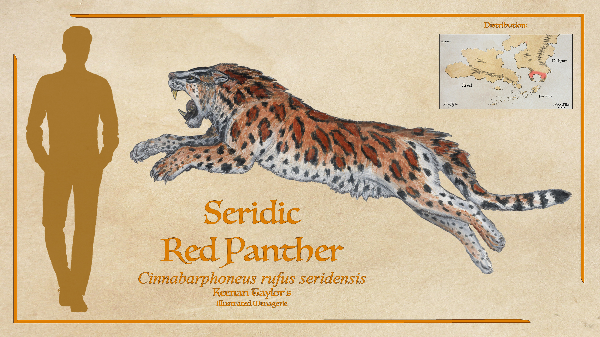
Cinnabarphoneus rufus seridensis
The Seridic red panther is a particularly large subspecies of Cinnabarphoneus rufus (though some consider them a distinct species). Their males can sometimes approach two hundred kilos, though a hundred fifty is more common, and females average around a hundred. This subspecies almost entirely subsists on fish and crocodiles, though they will target the antelope and deer that stick to the dry patches and islands.
Read species article →Arvelith Red Panther
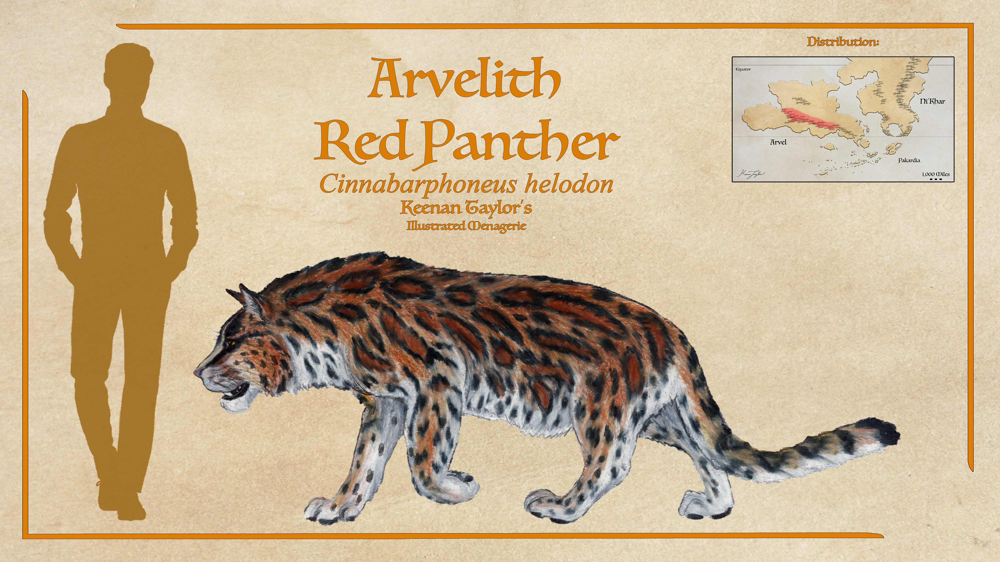
Cinnabarphoneus helodon
In the mountains of Arvel, throughout the scattered wetlands of the highland lakes, are the largest red panthers. While their range occasionally intersects with common red panthers of Arvel, they have darker denser fur and a more robust build, and the two don't seem to mix. With large males recorded up to three hundred kilograms, males of this species can exceed large tigers in mass, though they tend to be a bit shorter. Females are quite a bit smaller, often half the mass of males. Not much is known about them, but it is assumed they live similar lives to their smaller cousins.
Read species article →Pakardiant Red Panther
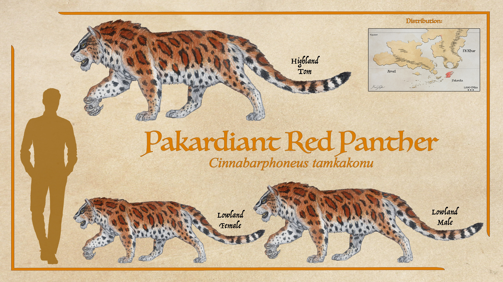
Cinnabarphoneus tamkakonu
Perhaps the most famous species is the Pakardiant red panther. These were thought to be the largest species until the Arvelith highland red panther was discovered. In the highlands of Pakardia they often reach 250 kilos, with the largest approaching 300, though lowland toms are typically closer to 200, and females again tend to be around half the mass. In the wetlands and tributaries of the Great Lakes, red panthers are often considered apex predators, readily taking down moose, elasmarians, young thescelosaurs and titans, along with a variety of large fish in the lakes.
Read species article →Kentarim Red Panther
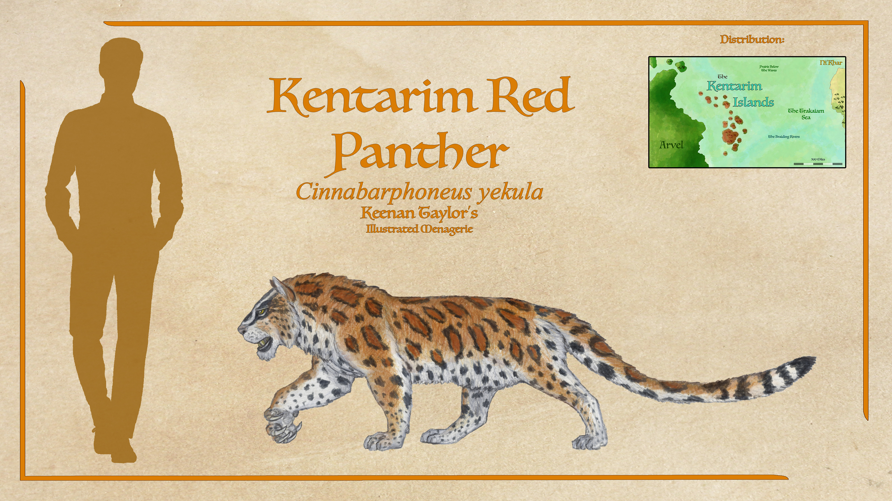
Cinnabarphoneus yekula
The Kentarim red panther, or yekula, is the apex predator on many of these islands, though a native cockatrice dominate in some islands and some regions of shared islands. They live as their mainland cousins do, with females being solitary and males sometimes forming small coalitions of usually related individuals. Unlike many island carnivores, the yekula has not undergone dramatic dwarfism or complete tameness. Its body size is intermediate between the common red panther and the giant highland species. Adults are generally estimated at approximately 90 — 140 kilograms, with substantial geographic and sexual variation.
Read species article →Khalren Panther
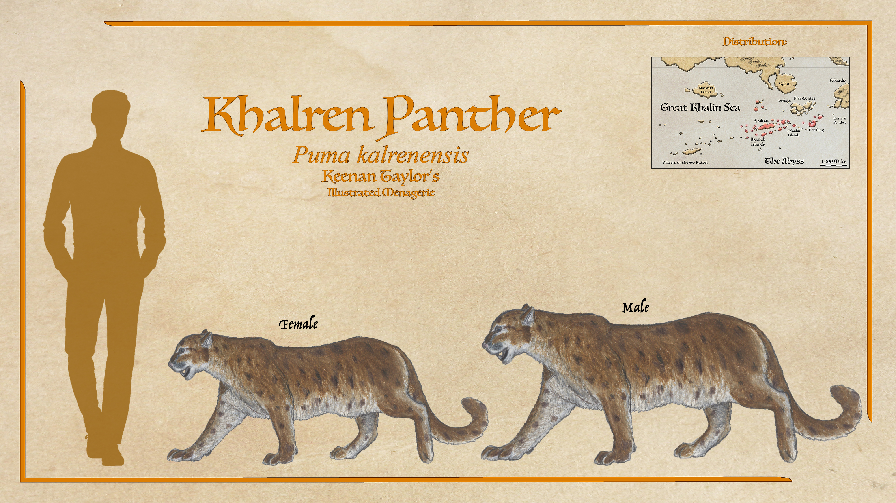
Puma kalrenensis
Given the tenuous relationship between Khalren and the Free-States, not a tremendous amount is known of the Khalren panther on the main island. However, a few of the smaller islands have better relations and populations of the panther. As the panther will regularly swim between mainland and islands, so these insular populations are actually quite informative. Like Puma of Earth, the Khalren panther is generally considered a solitary animal. However, mothers raise their young for the first year or so and often remain near their female offspring. Males wander far, often between islands.
Read species article →Kaimeran Bobcat
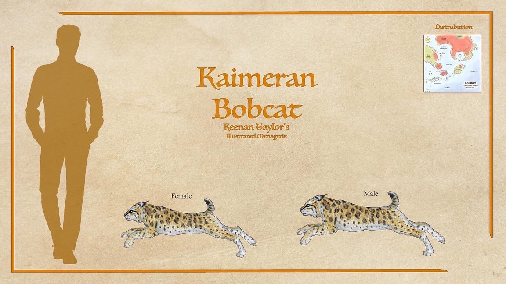
Lynx sp.
The Kaimeran bobcat currently has the widest range of any lynx species, being found on both continents, although their arrival to Arvel is comparatively recent, and they have only proliferated in Pakardia because of being brought by ships. Despite the common name they are closer to Kaimerian lynxes than the American Bobcat of Earth. They are common in titan gardens and the houze prairie. They will also venture into the Seridic wetlands and Crescent jungle, and while proficient swimmers they aren't fond of water.
Read species article →Bearded Bobcat
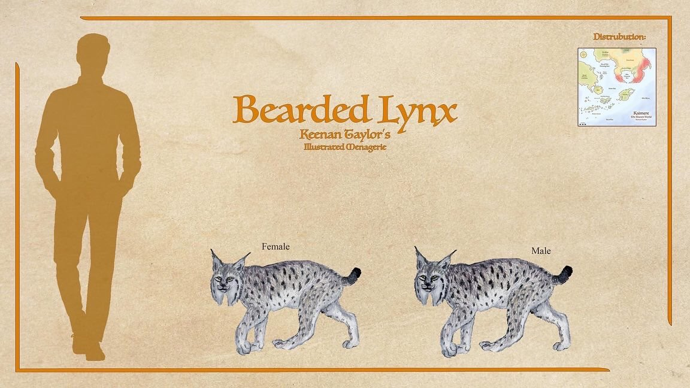
Lynx sp.
The mountain or bearded lynx is of Ni'Khar, and as its name suggests, restricted to the Telmede mountains. They have thick fur to endure the high elevation of these mountains. Like the bobcat they target lagomorphs and roads. They are reclusive animals being very skittish around people and avoiding settlements. Among the genus, it is the most cold-adapted. Its body is compact and heavily furred, reducing heat loss at elevation. The legs are shorter relative to body length than those of the bobcat, lowering the center of gravity for movement across steep terrain.
Read species article →Common Lynx
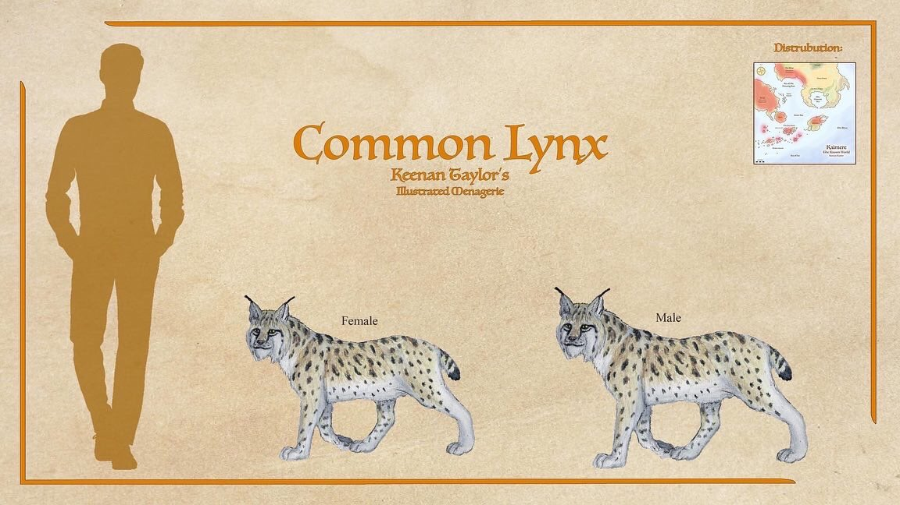
Lynx sp.
The western or common lynx looks much like the bearded lynx, although they are only superficially similar and diverged shortly after the genus Lynx was brought to Kaimere. They are found throughout the forests and highlands of Arvel and Pakardia, with a small population on the islands and northern forests. The common lynx is typical of the dietary preference of this genus. Their coat is highly sensitive to the environment, aiding in their adaptability. Like the bobcat they are comfortable around people, but being around twice the size, they can be a danger to pets and are much less welcome in settlements than bobcats.
Read species article →Dire Bobcat
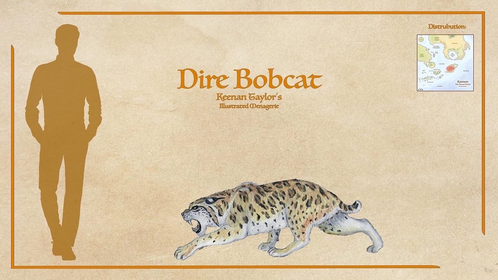
Lynx sp.
By far the largest of this genus on Earth or Kaimere, is the dire bobcat of the Pakardiant highlands. At up to 100 pounds, they are impressive animals. They were the first lynx to reach Pakardia. Initially growing large with all the large rodents and lagomorphs present and the absence of Homotherium, encouraged them to get large and lean into the pursuit generalist niche. They avoided the lowlands which was the battleground of dholes and hyenas, instead finding opportunity in the highlands and lake country of mainland Pakardia.
Read species article →Kaimeran Wildcat
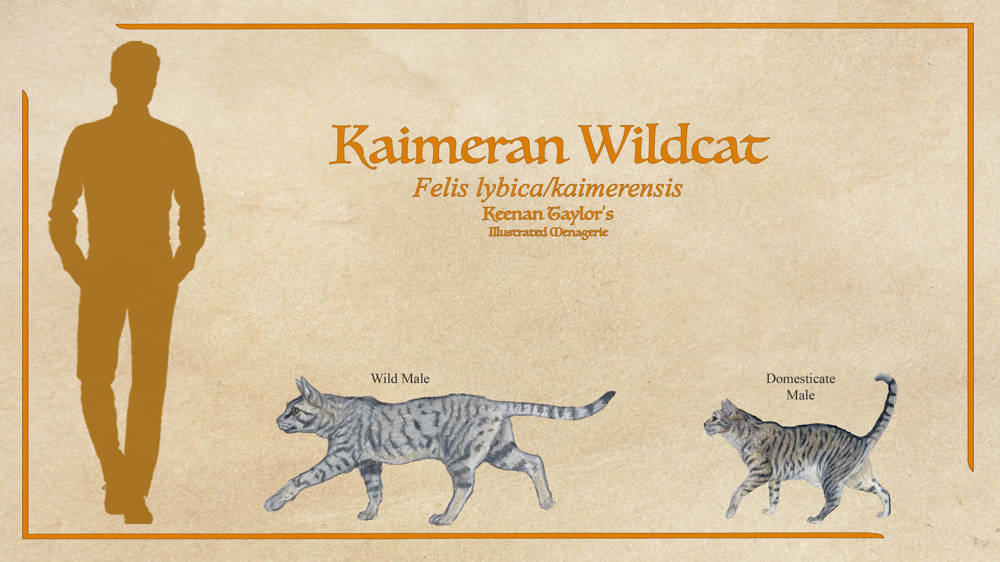
Felis lybica/kaimerensis
A cat harvested from northern Africa around 250,000 years ago was the African wildcat. While there were other wildcats throughout the Known World, most notably leopard cats descended from Pleistocene Southeast Asia and a family of small nimravids, the Kaimeran wildcat quickly outcompeted or pressured these to extinction or endangerment. Their habitat versatility meant their genetic diversity could be much higher than a specialist in a given area, and like leopards, their inclination to wander and not being restricted in habitat aided in a quick dispersal.
Read species article →Brakunze
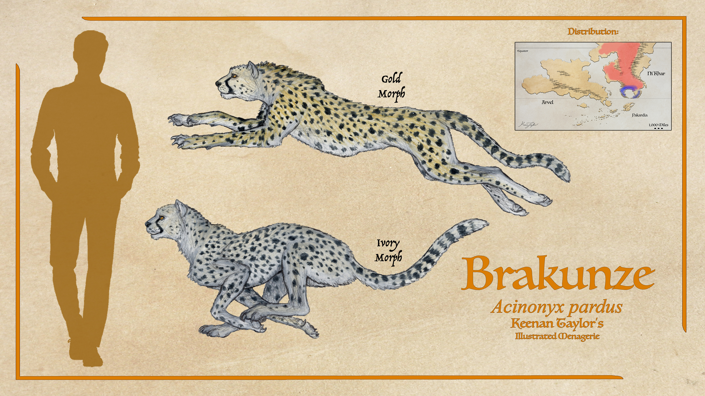
Acinonyx pardus
The most successful of the cheetahs is the Shu hunting cat, or brakunze. Wild hunting cats were originally called pards in early Assembly literature, which may account for early conflation with leopards in many ecological surveys, and Kaimeran cheetah is increasingly favored. They range throughout much of western Ni'Khar and far north all the way to the northern hemisphere. They once lived in the crescent and savanna hinterlands between the crescent and houze prairie, but for reasons unknown, they vanished from this region sometime between 4000 and 5000 years ago.
Read species article →Great White Cheetah
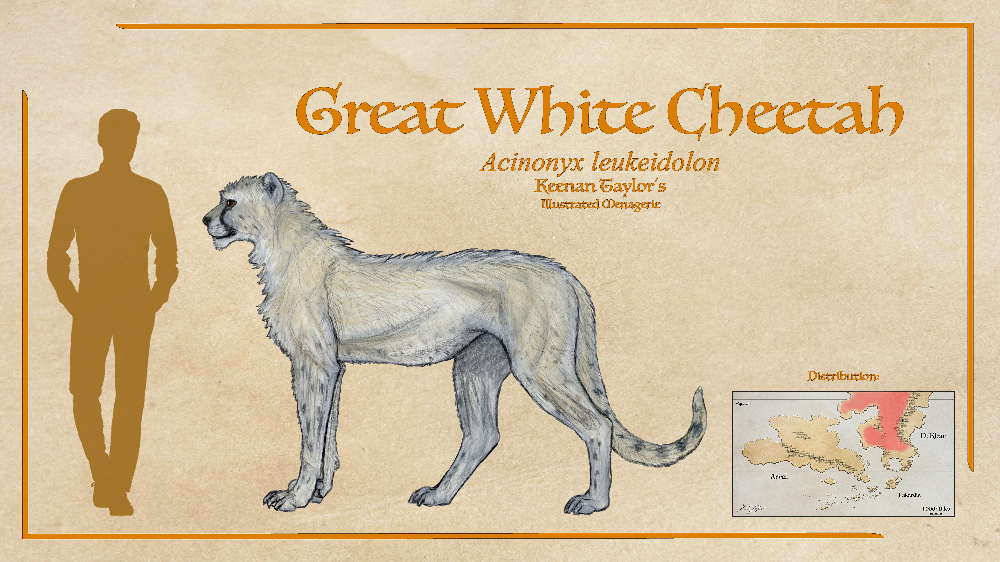
Acinonyx leukeidolon
The Ni'Khari great white cheetah, often just called the giant cheetah, are kings of the equatorial deserts and western badlands. Males can weigh up to 170 kilograms. Their remarkably long legs and generally slender build makes them uniquely suited among cats to shed heat and survive this unforgiving wasteland. Though their long legs of course contribute to their speed, especially in their sandier territory, it is the endurance and remarkably energy-efficient stride of these long legs that is of even greater benefit than raw speed. There are elasmarians, kangaroos, jackalopes, and desert shalhos as regular prey, but they can get by on hares and other small game.
Read species article →Great Grey Cheetah
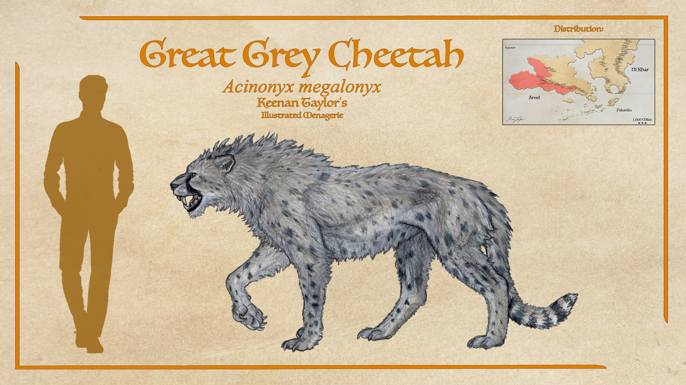
Acinonyx megalonyx
The other species descended from Acinonyx pardinensis is the great grey or Timugai cheetah. At up 250 kilograms in large males, they are the biggest known member of felinae on Earth or Kaimere. They and the great whites are around the same height, and some surveys suggest great whites are taller, but their more robust build means the Timugai cheetah is often considered larger. These enormous cats are found in western Arvel, ranging from the western half of the steppes to the deserts and monsoon forests.
Read species article →Qajarith Catamount
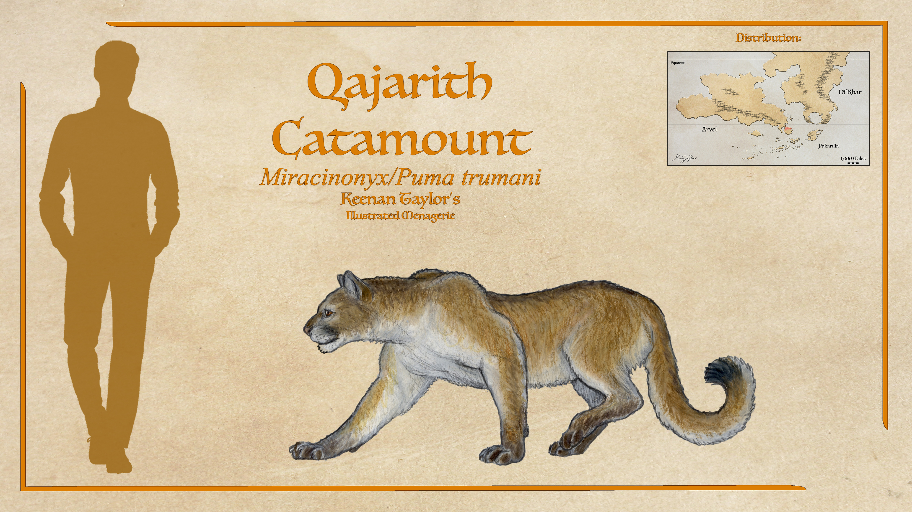
Miracinonyx/Puma trumani
Miracinonyx, the American Cheetah, was a common apex predator in North America throughout the Pleistocene. Though long assumed to be a cousin of modern cheetahs, evidence is increasingly conclusive that they are instead related to cougars, perhaps even within the genus Puma, and any similarities are a result of convergent or parallel evolution. The men who live in the smoky mountains of northern Qajar claim to often see panthers without spots. This cat is called the Qajarith catamount.
Read species article →Ni'Khari Leopard

Panthera pardus ajax
The most abundant leopard subspecies is the second largest after the cave leopard, and certainly largest of African stock: the Ni'Khari leopard. Toms in the western forests can reach an impressive hundred kilograms, and some prairie leopards are still around the same size as large leopards in India, though in many regions they are small as Arvelith leopards. It seems the versatility of this species is best seen in Ni'Khari leopards, which despite frequent genetic exchange have the widest variation in size.
Read species article →Arvelith Leopard
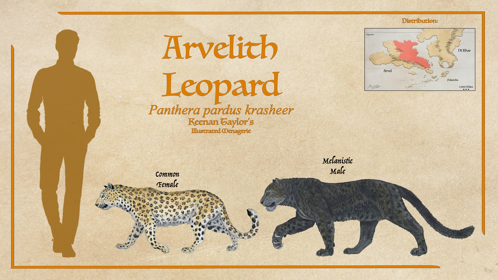
Panthera pardus krasheer
Tree caching is the pride and joy of the smallest leopards: the Arvelith leopard. Especially in open forests, it is often a necessity. Hyenas, sulans, lions, common cockatrice, terror birds, and many other potential threats could easily see and steal a leopards kill in more open forests. While Arvelith lions and sulans can climb, with lions being better at it than African lions due to their smaller size, they still cannot climb nearly as well or as high as Arvelith leopards, so this behavior means leopards are able to make home regardless of which competing species is more abundant on the ground below. Most males are fifty kilos or less, so they very much avoid the wrath of all the predators which might compete with a bigger panther.
Read species article →Mountain Panther
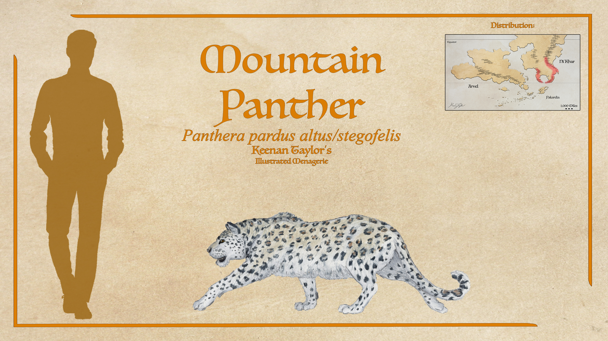
Panthera pardus atlus/stegofelis
In southern Ni'Khar, the ecological warpath of the common hyena carried leopards into the mountains. Tigers perished and Homotherium became quite scarce. In the wake of the hyena, the leopards settled in with two populations: one in the western peninsula, the other in the east and quite far up the coast. These mountain subspecies look quite similar, but unlike the mountain hyenas which often island hop between peninsulas, these two seem quite distinct to a point that most give them distinct subspecies: the western Telmede panther in the west, and the eastern Telmede panther in the east.
Read Western Telmede Panther article →Read Eastern Telmede Panther article →
Qadanith Leopard

Panthera pardus kaimerensis
In eastern Arvel, where the southern steppes meet the northern forests, a third leopard subspecies is found: the Qadanith leopard. They look very much like a mix between cave and Arvelith leopards, and genetic studies support this conclusion. They tend to be given their own subspecies designation: Panthera pardus kaimerensis. They are larger on average and have thicker fur than most Arvelith leopards, but not as large as cave leopards. Their range spans as far north as the Rugir Peninsula, the islands of the Free-States, and Qajar itself.
Read species article →Cave Panther
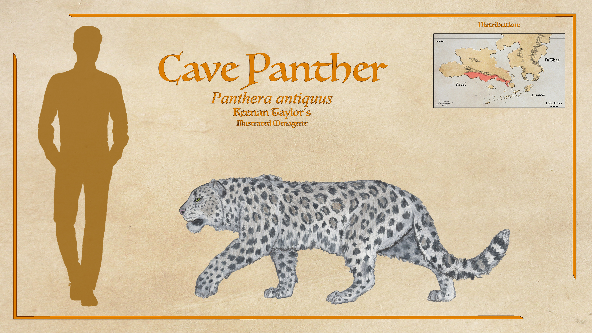
Panthera antiquus
The cave panther or cave leopard is generally thought to be a descendant of Panthera pardus spelaea, the European cave leopard, which some scholars believe is just a European population of Persian leopard. However, in Kaimere they are usually given their own subspecies or even species. Cave leopards are extremely successful in southern Arvel, but themselves never seemed able to penetrate the northern region the way Arvelith lions did.
Read species article →Pakardiant Leopard

Panthera kakonu
Despite its name and longtime assumption as another subspecies of leopard, the Pakardiant leopard is generally presumed to belong to the snow leopard and tiger Panthera lineage that arrived to Kaimere 1.5 million years ago from Southeast Asia. They tend to be a bit smaller than cave leopards though have a more robust build, so their toms can also reach a hundred kilos in the largest specimens. Despite this size, they still tend to target smaller prey and cache in trees, despite their main competition in the form of the red panther and indrakai both being proficient climbers.
Read species article →Kaimeran Tiger
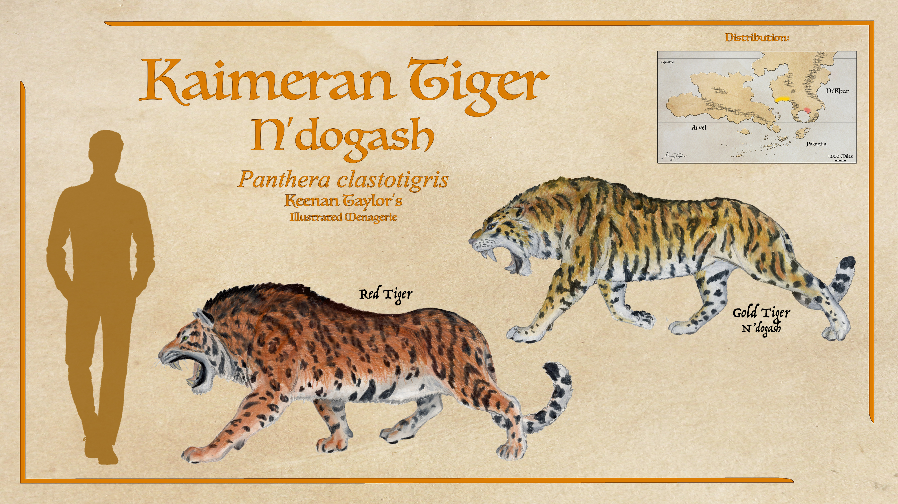
Panthera clastotigris
The N'dogash, or Kaimeran tiger, was once found throughout the forests and grasslands of Ni'Khar. Tigers already had to be smaller than most on Earth so they could cache their kills either in small thickets or in trees out of reach of theropods and terror birds. This pressure was compounded with the new abundance of hyenas. This was a lot of pressure for tigers, other Panthera, and cougars. It may simply be that leopards used to playing this game. A small advantage can quickly compound on an ecological scale. Tigers now only reside in two isolated forests: the red tiger in Imperial lands, and the golden tiger along the southwest coast. Both are considered rare, with the red tiger being endangered due to retaliations by local peoples.
Read Kaimeran Red Tiger article →Read N'dogash article →
Cave Lion
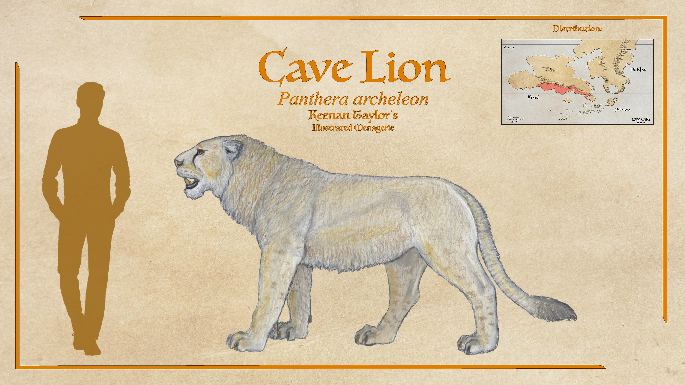
Panthera archeleon
Cave lions aren't substantially different from their ancestor. On Earth, cave lions shrank over time, likely a result of the intense stress of climate fluctuations in the late Pleistocene. As this never occurred in Kaimere and there's plenty of game in their habitat, this cat retains great size. They have proportionally longer legs and are therefore a bit taller than ancestors of the same size. Though it can be tempting to think this makes them faster, and may aid a bit in speed to partially compensate for their great bulk, but it seems more an adaptation for distance travel. With an efficient stride they can cover a lot of ground in search of prey and patrolling vast territories. An imposing height likely also helps them assert their claim at kills.
Read species article →Arvelith Lion
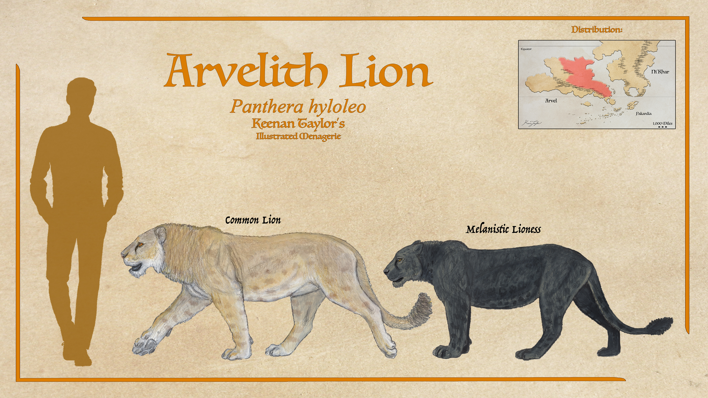
Panthera hyloleo hyloleo
Arvelith forest lions of northern Arvel do not have the luxury of large size. Lionesses tend to weigh around sixty kilos and males a hundred, though large males can push a hundred fifty kilos. While often the second largest mammal predator in their ecosystem after the Arvelith pouch-lion, that's not saying much. Forest hyenas and sulan are all the same size. All are diminutive below firebacks, who are themselves an order of magnitude smaller than zentaur. All that said, lions are quite successful throughout open and closed forests throughout it Arvel.
Read species article →Qadanith Lion
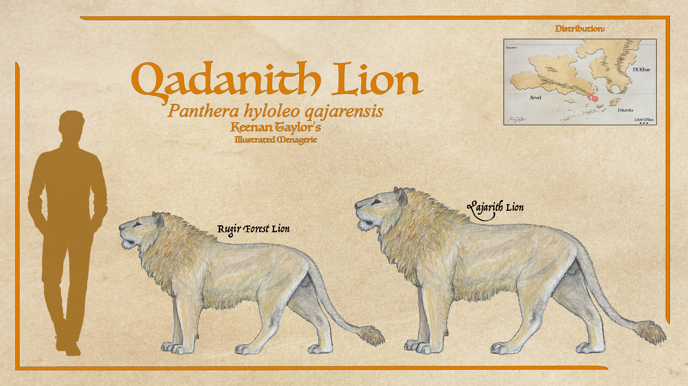
Panthera hyloleo qajarensis
Though cave and forest lions are generally endemic to different parts of the continent and separated by a formidable mountain range, in the southeast, there is some overlap. Most common in this range is the Qadanith lion or Qajarith lion. Usually classified as a subspecies of forest lion, these cats are larger and more social. Males often have a full mane, though often lighter and shorter than most Earth lions.
Read species article →Nerotan Lion
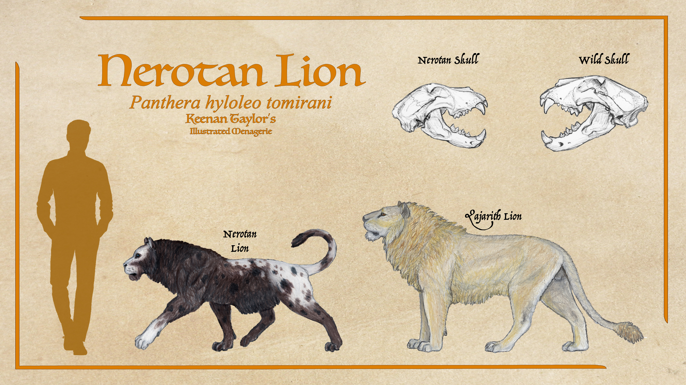
Panthera hyloleo tomirani
While some Qajarith despise lions and seek to eradicate them as the peoples of the Free-States did, many hold these majestic cats in high regard. Qajarith folklore is rich with stories of heroic lion skin-changers and villainous man-eaters. Many noble houses have lions in their heraldry. None champion lions more than the Nerotans: a noble family controlling the largest holdings of any Republic family. Around three thousand years ago, during the Dark Ages when there was no nation in Qajar only scattered independent city-states, a noblewoman of House Noru named Tomiran worked with an Akanuk dog breeder to domesticate lions from the tame members of the family menagerie.
Read species article →04 · CLASSIFICATION
Taxonomic Notes
This section records uncertainties, disputed relationships, and proposed revisions to the family's classification. Confirmed taxa should be distinguished from tentative identifications and provisional placements.
Where an animal's appearance suggests membership in Felidae but its ancestry has not been established, resemblance alone should not be treated as sufficient evidence of taxonomic inclusion.